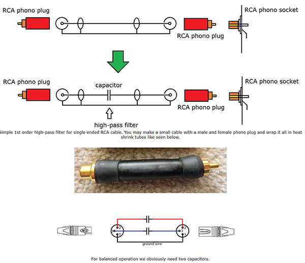

This calculator can help with the capacitance needed for a capacitor,
to engineer a passive high pass filter for e.g. subwoofer integration.
Uses formula C = 1/(2*π*Zin*f3)
1. Enter amplifier input impedance (Zin) in Ohms:
2. Enter desired -3dB cutoff frequency(f3) in Hertz:
Enter valid numeric values to
by ժʝ
Wiring example drawing, borrowed from Troels Gravesen, Denmark.
